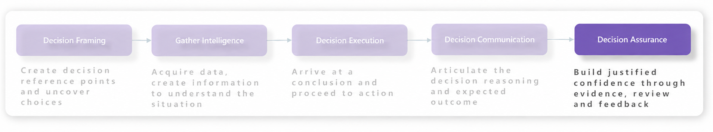
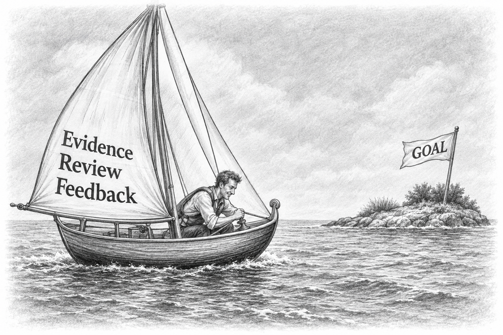
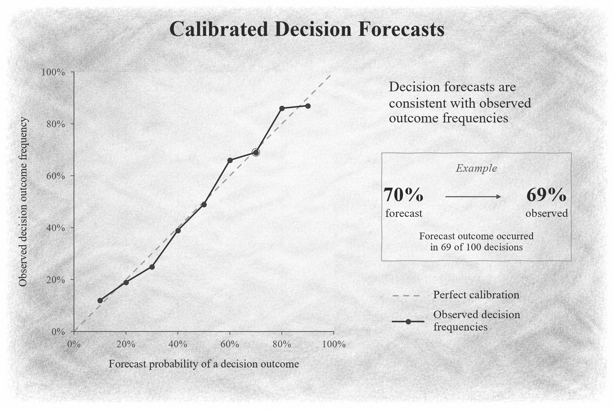
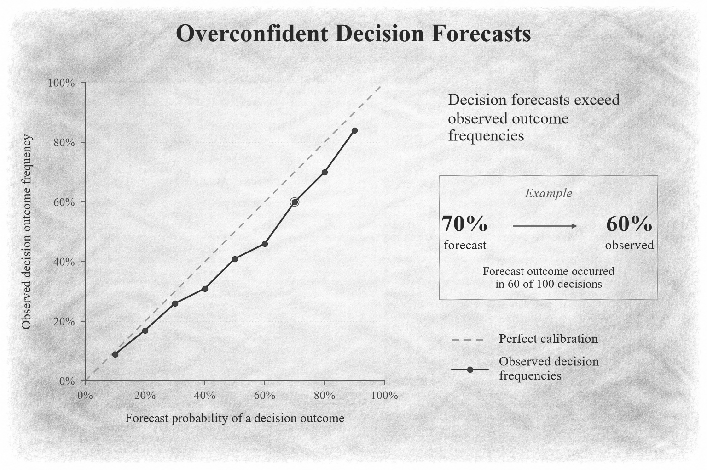
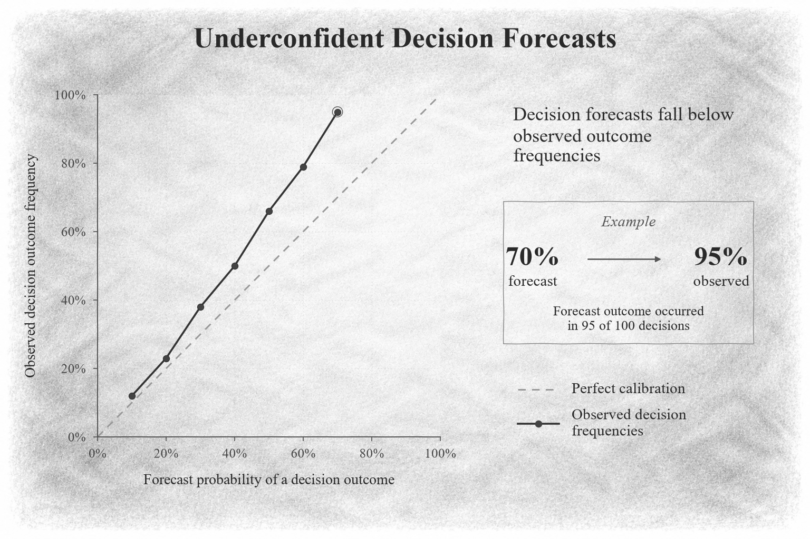
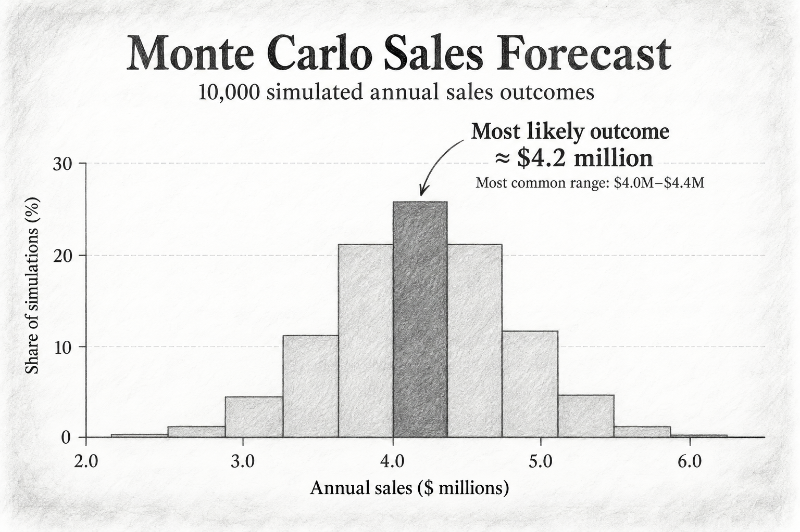
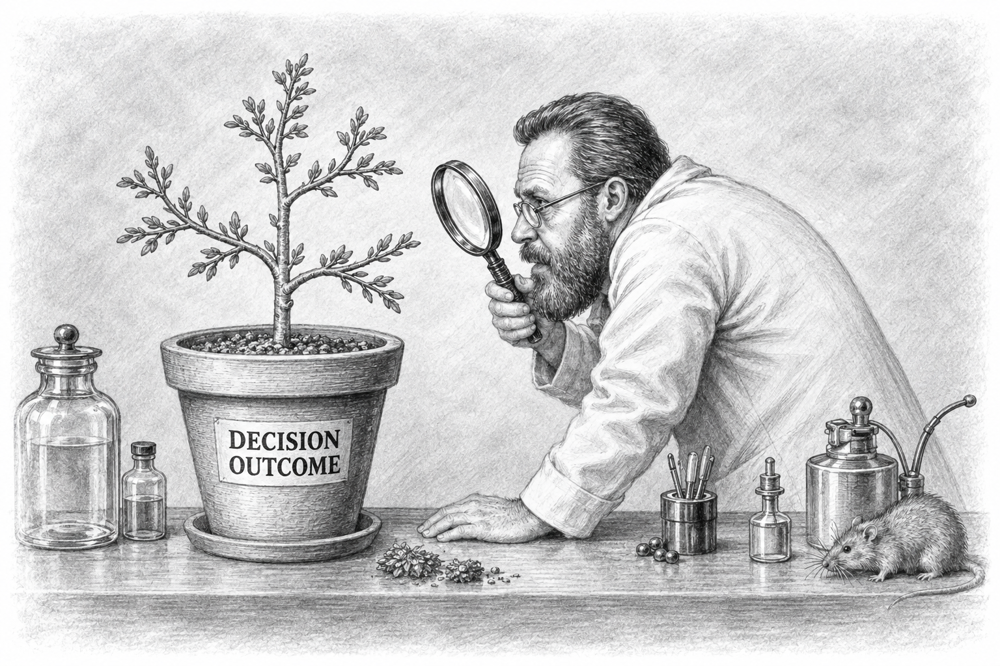

Chapter 1I
Decision Assurance
 Decision Intelligence – Decision Assurance
Decision Intelligence – Decision Assurance

Introducing Decision Assurance¶
Making a decision does not stop the world from changing. You choose a route to work, then discover traffic ahead. A team chooses a project schedule, then encounters an unexpected dependency. The original choice may have made sense, but new evidence can change what makes sense next.
Decision assurance is the risk-proportionate practice of building and maintaining justified confidence that a decision is ready, executed as intended, and evaluated for improvement. It begins before action, continues while the decision is carried out, and uses outcomes to strengthen future decisions. Monitoring is one important assurance activity, but assurance also includes evidence, challenge, controls, clear responsibilities, and agreed responses when conditions change.
Assurance provides reasonable confidence, not certainty and not a guarantee of a favorable outcome. The effort should match the stakes: choosing a lunch location may need only a quick check, while an expensive, irreversible, regulated, or AI-automated decision deserves stronger evidence and more independent challenge. The UK government's Orange Book: Management of Risk – Principles and Concepts similarly connects assurance with confidence in the design, application, and effectiveness of controls used to manage risk and achieve objectives.
Imagine sailing toward an island. Choosing the destination is decision framing. Checking the weather is gathering intelligence. Setting the course is decision execution. Explaining the plan to the crew is decision communication. Decision assurance asks whether we have enough justified confidence to begin and continue the journey. Before departure, we check the route, weather evidence, boat, responsibilities, and conditions that would make us turn back. While sailing, we verify that the crew follows the plan and watch for signals that require a course change. Afterward, we compare the journey with our expectations and carry the lessons into the next voyage.

Three Layers of Decision Assurance¶
On the boat, decision readiness means checking the destination, route, weather assumptions, crew responsibilities, and acceptable risks before departure. Execution integrity means confirming that the chosen course is actually followed, recording deviations, and responding when agreed thresholds are crossed. Outcome validation and learning means comparing the actual journey with the expected destination, timing, costs, and consequences, then improving the current or next voyage.
Evidence arrives at different times. Some information can prevent a weak decision before departure. Some calls for a correction while we are still sailing. Other lessons become clear only after we reach shore. Decision assurance connects all three moments rather than waiting for the final outcome.
The same three layers apply to human intuition, simple decision rules, quantitative models, and AI-assisted decisions. Each layer asks a different assurance question and requires evidence that is appropriate to the stakes.
| Assurance Layer | Core Question | Practices and Evidence |
|---|---|---|
| 1. Decision Readiness | Is the decision fit to proceed? | Review the objective, framing, alternatives, evidence, assumptions, uncertainty, risks, success criteria, owner, and decision rights. |
| 2. Execution Integrity | Is the approved decision being carried out as intended? | Confirm actions, responsibilities, controls, and communication; record overrides and deviations; monitor leading indicators and escalation thresholds. |
| 3. Outcome Validation and Learning | Is the decision achieving its objective, and what should change? | Compare results with expectations, measure benefits, costs, forecast accuracy, and unintended consequences, then assign corrective actions and feed lessons into later decisions. |
In Decision Quality, Carl Spetzler, Hannah Winter, and Jennifer Meyer highlight elements that support readiness: useful alternatives, reliable information, clear trade-offs, and sound reasoning. The feedback emphasis in J. Edward Russo and Paul J.H. Schoemaker's Decision Traps helps us use later evidence to improve how we decide. Assurance becomes useful when evidence supports a clear action: proceed, proceed with conditions, revise, escalate, pause, or stop.
Reasonable Confidence and Outcome Bias¶
Suppose a team estimates an 80% chance of finishing a project on time and decides to proceed because the expected benefits justify the possible delay. The project finishes late. That result alone cannot tell us whether the decision was bad or whether assurance failed. A 20% possibility was always part of the forecast, and choosing another option might have created greater costs. Assurance asks whether the estimate was supportable, the risks and success criteria were clear, the authorized action was followed, and the result was evaluated honestly.
Annie Duke makes this distinction in Thinking in Bets: the quality of a decision and its outcome are different things. For our project, that means reviewing what was known when the team chose its staffing plan, rather than rewriting the reasoning after seeing the delay.
For a human decision-maker, separating the process from the result takes deliberate effort. We may praise a risky shortcut when it happens to work, then criticize a careful choice when it encounters bad luck. Judging the choice only by how it ended is outcome bias. Review the evidence, alternatives, and assumptions available when the staffing decision was made alongside the actual delay and its consequences. This gives the team a fairer basis for learning what to change.
Calibration, Brier scores, and log loss provide quantitative assurance evidence about the probabilities behind our decisions. They compare forecasts with observed outcomes and give us feedback for improving future estimates. They do not prove that the objective was correct, the decision process was sound, the action was implemented properly, or the benefits justified the costs. Those claims require additional evidence.
Build an Assurance-Ready Decision Record¶
Decision records are materialized decisions: durable artifacts capturing what was decided, why it was considered ready, how it was performed, and what happened afterward. They preserve the frame, alternatives, evidence, assumptions, method, recommendation, authorization, and action. The recommendation and action may differ, especially when a person changes or overrides an AI recommendation. Recording both makes that distinction visible and allows execution integrity to be checked.
For people, memory is an unreliable substitute for this record. After a project is late, it can feel as though the warning signs were obvious all along. We may remember successful predictions more readily than mistakes. Recording expectations before the outcome helps counter hindsight and selective memory, so the review can use the information we actually had at the time.
A decision record supports all three assurance layers: it documents readiness before approval, preserves execution evidence while action is underway, and connects outcomes with learning afterward. For our project example, an assurance-ready record could contain:
| What to Record | Example |
|---|---|
| Decision and owner | The project lead approves keeping the current team. |
| Options and reason | Consider extra staff or reduced scope; choose the current team after weighing cost and delay risk. |
| Evidence and review | Check past projects and the supplier schedule; have a peer challenge the assumptions. |
| Decision forecast | September 1: 80% chance that all agreed acceptance tests pass by September 30 at 5 p.m. |
| Action taken | Confirm staffing, scope, and deadline; record any changes from the approved plan. |
| Monitoring | Check supplier progress weekly; escalate if a milestone slips by more than two business days or the decision forecast falls below 65%. |
| Outcome | Record on-time or late, attach the dated acceptance report, and note costs and customer impact. |
| Learning and follow-up | Record what worked, what needs to change, and who will make each improvement. |
The record grows as the decision moves from readiness through action to validation. Preserve the original context, assurance criteria, and forecast, then attach dated updates, actions, outcomes, and lessons. If new evidence changes the probability, keep both the original estimate and the revision. This shows what was known at each decision point and why confidence changed.
Independent challenge can make assurance more credible by exposing blind spots or conflicts of interest, but it should be proportionate. A quick personal choice may need only a self-check; a high-stakes or irreversible decision may justify a peer reviewer, specialist, approval gate, or independent evaluator. The decision owner still owns the decision.
Define the outcome before scoring it. “The project went well” is too vague to resolve consistently. A dated acceptance criterion gives everyone the same event to evaluate and helps prevent changing the meaning of success after seeing the result.
Quantitative Evidence for Decision Assurance¶
Decision records capture what we expected, why we believed the decision was ready, how it was carried out, and what actually happened. Math helps us turn some of that evidence into measurements we can compare. Instead of relying on an impression that our decisions are improving, we can examine how often forecasts match reality, measure the size of probability errors, and compare results across similar decisions. Quantitative assurance evidence uses reproducible measurements to test specific claims about decision performance. It gives both human and AI decision-makers a consistent way to check expectations against outcomes.
This matters because confidence and memory alone can give us a misleading picture of performance. A person may remember several successful predictions while overlooking repeated overconfidence, and an AI system may produce convincing explanations while assigning unreliable probabilities. Calibration examines whether stated probabilities match observed frequencies. Brier scores and log loss measure probability errors across resolved forecasts. Together, these tools help test whether probability estimates are becoming more dependable. Their assurance claim is deliberately narrow: the quality of the decision process, execution fidelity, case difficulty, and the costs and benefits of the resulting actions still require separate evidence.
Calibration - Does Confidence Match Reality?¶
What Calibration Means¶
Calibration means that forecast probabilities line up with how often the named outcomes actually occur.
Suppose a project lead must decide whether to use the standard staffing plan or pay for extra staff. Before work begins, the lead records a 70% decision forecast for on-time delivery with standard staffing: all agreed acceptance tests must pass by the recorded deadline. After considering that forecast, the cost of extra staff, and the acceptable risk of delay, the lead chooses the standard staffing plan. The recorded outcome criteria let us resolve the decision forecast consistently, whether it came from a person, a decision rule, or an AI model.
If our 70% decision forecasts are well calibrated, approximately 70 out of every 100 comparable projects should meet their deadlines over many observations. This does not guarantee any individual result, or exactly seven successes among the next ten projects. A late project can be consistent with a sensible 70% decision forecast.
We are checking the probabilities in our decision forecasts. Whether choosing the standard staffing plan was a good decision also depends on the available alternatives, costs, risks, and evidence at the time.
How to Read the Calibration Charts¶
A calibration curve, also called a reliability diagram, compares decision forecasts with outcomes:
- X-axis: the probability of on-time delivery in the decision forecasts.
- Y-axis: how often projects were delivered on time among those with that decision forecast probability.
- Dashed diagonal: perfect agreement between probability and observed frequency.
- Dark markers and connecting lines: observed frequencies across probability groups. The segments help us follow the pattern; they do not represent additional observations.
Each point in the calibration illustrations below represents aggregates of 100 hypothetical staffing decisions to use the standard plan. Real decision forecasts may use many different percentages. Group similar probabilities into ranges. For each group, compare the average decision forecast probability with the percentage of projects delivered on time. Record how many decision forecasts each group contains. The scikit-learn probability calibration guide explains this approach.
Calibrated Decision Forecasts¶

Start at 70% on the X-axis, move up to the highlighted marker, and read 69% on the Y-axis. For 100 comparable projects, the teams chose the standard staffing plan after considering extra staff. Their recorded decision forecasts assigned a 70% chance of on-time delivery, and 69 projects passed all agreed acceptance tests by their deadlines. That small difference illustrates close agreement, well within a statistical error.
The other points move above and below the diagonal because results vary by chance. Real-world reliable decision forecasts will not match every observed percentage exactly. This example shows that variation within an acceptable statistical error.
Overconfident Decision Forecasts¶

In a separate hypothetical group of 100 comparable projects, the teams chose the standard staffing plan after considering extra staff. Their decision forecasts assigned a 70% chance of on-time delivery, but only 60 projects passed all agreed acceptance tests by their deadlines. Here, 70% decision forecasts correspond to 60% observed on-time delivery: the decision forecasts exceed the observed rate by 10 percentage points.
The markers lie below the diagonal because on-time delivery happens less often than the decision forecasts suggest. The gap varies and narrows again at higher probabilities. These fixed illustrative values show uneven overforecasting rather than a perfectly smooth curve.
For future staffing decisions, a persistent pattern like this suggests overly optimistic expectations. A team might continue choosing standard staffing when extra capacity warrants consideration, commit to deadlines, or leave too little contingency because its decision forecasts overestimate the chance of on-time delivery.
Underconfident Decision Forecasts¶

In another separate hypothetical group of 100 comparable projects, the teams chose the standard staffing plan after considering extra staff. Their decision forecasts assigned a 70% chance of on-time delivery, yet 95 projects passed all agreed acceptance tests by their deadlines. Now, 70% decision forecasts correspond to 95% observed on-time delivery: the decision forecasts fall below the observed rate by 25 percentage points.
These fixed illustrative points sit above the diagonal. The gap widens unevenly, from 2 percentage points at a 10% decision forecast to 25 points at 70%. The series stops there. Although the axes extend to 100%, we have no observations for higher decision forecast groups in this illustration.
For future staffing decisions, persistently underestimating on-time delivery in decision forecasts could cause the team to reject useful standard staffing plans, pay for unnecessary extra staff or contingency, or miss opportunities. More cautious probabilities are not automatically more dependable.
Compare Decision Forecasts at 70%¶
| Decision Forecasts | Probability of On-Time Delivery | Projects Delivered On Time out of 100 | Reading the Group |
|---|---|---|---|
| Calibrated | 70% | 69 | Close agreement, with sampling variation. |
| Overconfident | 70% | 60 | Decision forecasts exceed the observed rate by 10 percentage points. |
| Underconfident | 70% | 95 | Decision forecasts fall below the observed rate by 25 percentage points. |
These are separate hypothetical groups, each involving the decision to choose the standard staffing plan. Calibration is a pattern across repeated observations, not a verdict from one result. Small groups fluctuate more, and ten projects sharing one supplier may provide less independent evidence than ten projects with unrelated dependencies.
Classification accuracy tells us how often labels such as “on time” or “late” were correct. Calibration checks whether the probabilities in decision forecasts match how often outcomes occur. Discrimination means telling which projects are more likely to finish on time. Always giving every project the historical on-time rate may be calibrated when conditions are stable, but it does not help identify which projects need extra attention.
Use Calibration to Improve Future Decision Forecasts¶
- Record decision forecasts. Before outcomes are known, save the probability, date, evidence, and what counts as on-time delivery.
- Compare with outcomes. Group similar decision forecasts for comparable staffing choices. Compare their average probability with the actual on-time delivery rate, and note the group size.
- Learn from repeated gaps. Review the evidence and assumptions behind persistent overestimates or underestimates. Avoid treating one result or a small group as a reliable pattern.
- Check future decision forecasts. Apply what you learned, then compare new forecasts with later outcomes to see whether calibration improves.
This is a technique I have employed in the past when running a technical solution sales organization years ago. In order to have an effective sales organization, you need to ensure the pipeline is predictable. As new opportunities came into the sales systems, the account teams responsible for the customer accounts would report the likely outcome of success. As you can imagine, sales people are naturally not-calibrated and wildly overconfident. I have many stories of a "meeting a restaurant" that was supposed to lead to milions dollars of business. Why did this matter? If a pipeline was forecasting a certain amount of managed services or engineering work, that needed to be staffed accordingly. These decisions would not be effective with proper calibration.
In order to address this, we started implementing basic calibration best practices and showing the account teams how wildly off their sales pipeline has become. This allowed the team to temper the overconfident sales pipeline in order to make better financial and staffing decisions.
One interesting aspect of having highly calibrated decision forecasts, is that you can now combine them to "simulate the future". In this case, simulate the most likely outcomes in sales success. For eample, all of the calibrated sales probabilities can be combined with a Monte Carlo simulation to provide an effective distribution of the likeliest outcome. This is illustrated below in a simple example where several dozen forecasts are run 10,000x to simulate the most likely outcome.

Brier Scores - Measuring Probability Errors¶
An 80% forecast and a 95% forecast both say that finishing on time is more likely than being late. But they leave very different amounts of room for a delay. We need a way to measure that difference once the outcome is known. The Brier score measures the average squared difference between forecast probabilities and binary outcomes.
For our project, let $p$ be the probability of finishing on time, expressed as a decimal. Let $y = 1$ if the project finishes on time and $y = 0$ if it is late. An 80% forecast gives us $p = 0.80$. Subtract the outcome from that probability, then square the difference:
| Actual Outcome | Calculation | Squared Error |
|---|---|---|
| On time: y = 1 | (0.80 − 1)² | 0.0400 |
| Late: y = 0 | (0.80 − 0)² | 0.6400 |
Now raise the forecast to 95%. The error becomes 0.0025 when the project finishes on time, but 0.9025 when it is late. Greater confidence earns a smaller error when correct and a larger error when wrong.
Both rows use the same calculation:
$$ (p-y)^2 $$
Once we have $N$ resolved forecasts, add their squared errors and divide by $N$ to get the average:
$$ \text{Brier score} = \frac{1}{N}\sum_{i=1}^{N}(p_i-y_i)^2 $$
We use the binary 0–1 convention, where lower is better. Zero means the forecasts assigned certainty to the outcomes that occurred. One is the worst possible score. Some sources add errors across both outcome categories and report a 0–2 scale, so check the convention before comparing numbers. The Brier score documentation describes both conventions.
A 50% forecast produces an error of 0.25 either way. That makes it a useful arithmetic reference, but not a universal benchmark: an established historical event rate can be a more informative baseline. A score of 0.16 also does not mean “16% of decisions were wrong.” It is an average squared probability error, not a percentage of incorrect labels.
Log Loss - The Cost of Confident Errors¶
Now imagine a forecaster who repeatedly says a project is almost certain to finish on time. When a project is late, that forecast left very little room for what actually happened. Log loss measures the negative logarithm of the probability assigned to the observed outcome. It gives a particularly large penalty when that outcome was assigned almost no probability.
Use the same $p$ for the probability of finishing on time and $y$ for the outcome. At $p = 0.80$, an on-time project was assigned probability 0.80, while a late project was assigned probability $1-p = 0.20$. Log loss takes the natural logarithm of whichever probability matches the outcome, then reverses the sign. We write the natural logarithm as $\ln$.
For example, an on-time project gives a loss of −ln(0.80) ≈ 0.2231. A late project gives −ln(0.20) ≈ 1.6094. The table below shows what happens as the forecast becomes more confident:
| Forecast of On-Time Delivery | Loss if On Time | Loss if Late |
|---|---|---|
| 80% | −ln(0.80) ≈ 0.2231 | −ln(0.20) ≈ 1.6094 |
| 95% | −ln(0.95) ≈ 0.0513 | −ln(0.05) ≈ 2.9957 |
| 99% | −ln(0.99) ≈ 0.0101 | −ln(0.01) ≈ 4.6052 |
Notice how the penalty for a late project increases as the forecast leaves less room for that possibility. You do not need to calculate logarithms in your head to see the lesson: being confidently wrong carries a large penalty under log loss.
For an on-time project, the individual loss is $-\ln(p)$. For a late project, it is $-\ln(1-p)$. Across $N$ resolved forecasts, the formula selects the appropriate loss for each outcome and averages the results:
$$ \text{Log loss} = -\frac{1}{N}\sum_{i=1}^{N}\left[y_i\ln(p_i)+(1-y_i)\ln(1-p_i)\right] $$
The log loss documentation uses this definition and the natural logarithm convention.
Lower log loss is better. It starts at zero and has no finite upper limit. Assigning probability one to the observed outcome gives zero loss. Assigning zero probability to what occurs gives an infinite theoretical loss. Software commonly clips probabilities slightly away from zero and one so the calculation stays finite. That handles the numerical problem, but the forecast still needs to account for outcomes that could occur.
Decision Assurance Scenario - Same Accuracy, Different Probability Quality¶
Imagine two forecasters evaluating the same ten projects before their outcomes are known. Forecaster A assigns every project an 80% chance of finishing on time. Forecaster B assigns every project 95%. Both use a 50% threshold to produce an “on time” label. Eventually, eight projects finish on time and two finish late.
| Resolved Projects | Number of Projects | Outcome y | Forecaster A | Forecaster B |
|---|---|---|---|---|
| Projects 1–8 | 8 | 1 | 0.80 each | 0.95 each |
| Projects 9–10 | 2 | 0 | 0.80 each | 0.95 each |
Both forecasters have 80% classification accuracy because both labeled all ten projects “on time.” But their probabilities expressed different expectations about delays. Scoring those probabilities reveals the difference.
Calculating the Aggregate Scores¶
For the Brier score, multiply each individual squared error by the number of matching outcomes, add the errors, and divide by ten:
$$ \text{Brier}_{A} = \frac{8(0.80-1)^2+2(0.80-0)^2}{10} = \frac{8(0.04)+2(0.64)}{10} = 0.1600 $$
$$ \text{Brier}_{B} = \frac{8(0.95-1)^2+2(0.95-0)^2}{10} = \frac{8(0.0025)+2(0.9025)}{10} = 0.1825 $$
For log loss, average the negative log probabilities of the observed outcomes:
$$ \text{Log loss}_{A} = -\frac{8\ln(0.80)+2\ln(0.20)}{10} \approx 0.5004 $$
$$ \text{Log loss}_{B} = -\frac{8\ln(0.95)+2\ln(0.05)}{10} \approx 0.6402 $$
The logarithms are calculated at full precision before rounding the final averages.
| Assurance Measure | Forecaster A: 80% | Forecaster B: 95% | Interpretation |
|---|---|---|---|
| Classification accuracy | 80% | 80% | Both produce the same labels. |
| Brier score | 0.1600 | 0.1825 | A has lower average squared probability error. |
| Log loss | 0.5004 | 0.6402 | A assigns the observed outcomes higher probability overall. |
Forecaster B receives smaller losses on the eight on-time projects, but the two late projects outweigh that advantage. A scores better on this particular set of outcomes. This is a hypothetical arithmetic illustration, not evidence that ten observations establish reliable calibration or that 80% is the right probability for future projects.
These scores reward honest probabilities over repeated forecasts. If you knew the true probability of each event, reporting it would give the lowest expected loss. This property is what makes Brier score and log loss proper scoring rules. However, a lower score can reflect better separation of likely and unlikely events, as well as better calibration. The uncertainty of the events also affects the scores. Check the probability groups alongside the overall score to understand what improved. The calibration guide explains these differences.
For assurance, the supported conclusion is limited but useful: on this resolved set, A's probabilities fit the outcomes better under both scoring rules. It is not evidence that A used a better decision process in every respect or that A will outperform B on future projects.
Also, neither score measures the value of the staffing decision directly. Avoiding a delay might require expensive extra capacity. Choosing whether to buy that capacity requires the probability estimate together with the costs, benefits, and available alternatives.
Turning Assurance Evidence into Action¶

Decision assurance becomes valuable when evidence changes what we do next. A scientist examining an experiment compares what was expected with what actually happened, checks the method, and states the limits of the conclusion. A decision-maker can do the same: Were delays random surprises, did we repeatedly underestimate supplier dependencies, or was the approved plan not followed?
For the project lead, measuring supplier delays is useful if it helps decide when to add a contingency. That connection between measurement and action is a practical lesson from Douglas W. Hubbard's How to Measure Anything. Choose measurements that help answer the decision in front of you.
The human side of this review matters too. If every missed forecast is treated as a personal failure, people may become reluctant to record uncertainty or acknowledge mistakes. Pressure to sound certain can also encourage probabilities that reflect what a manager wants to hear. Review the recorded evidence and reasoning, allow people to explain what surprised them, and agree on a specific improvement with an owner. People can be accountable for following a sound process without being expected to predict every outcome correctly.
A practical assurance cycle can follow these steps:
- State the assurance question and possible action. Decide whether the evidence will support proceeding, proceeding with conditions, revising, escalating, pausing, or stopping. A review without a decision it can influence easily becomes ceremony.
- Resolve and validate the evidence consistently. Match outcomes to the recorded criteria, check provenance and execution records, and keep unresolved cases separate. Show how many forecasts have resolved because early results may not represent the full group.
- Compare with a meaningful baseline and look for patterns. Score the current approach and a historical base-rate forecast on the same cases. Review probability groups, project types, time periods, and sample sizes before reacting. A worsening score might reflect harder projects or changing conditions rather than a weaker process.
- Choose and own the response. If supplier-dependent projects are consistently overestimated, gather better supplier evidence, revise the probabilities, add a contingency rule, or escalate the decision. Record the response, owner, due date, and remaining uncertainty.
- Evaluate the change on later outcomes. Preserve the earlier record and compare the revised approach on new cases. Improving a score on the same observations used to design the change is not sufficient evidence of improvement.
When comparing forecasts, also keep the lead time consistent. A prediction made one day before delivery has more information than one made three months earlier. Mixing them can make a forecasting process appear to improve simply because it is predicting closer to the outcome.
A run of late projects might reveal a supplier problem, or it might reflect normal variation. Nate Silver explores the difficulty of separating useful evidence from noise in The Signal and the Noise. For our project reviews, the lesson is to investigate repeated patterns, account for uncertainty, and update when conditions change.
Track decision consequences alongside forecast scores: delivery costs, customer outcomes, and the cost of interventions. If extra staffing improves delivery rates, record that action too. Outcomes reflect what people actually did; we cannot directly observe what the same project would have done under a different staffing plan. This helps prevent attributing every improvement to a better forecast.
Assurance evidence can return to any earlier step of the Decision Intelligence Framework. We might need a different frame, better information, a revised execution rule, clearer communication, or a different objective. Sometimes the appropriate response is to keep the current approach and collect more evidence.
Confidence should also be refreshed when something material changes: the objective, evidence, assumptions, environment, model, responsible people, or action. Assurance is therefore maintained across the decision lifecycle rather than awarded once and forgotten.
Decision Assurance with Generative AI¶
The same principles used to monitor human decisions and audit human decision systems apply to AI-assisted decisions. Whether a recommendation comes from a manager, an established planning system, or Generative AI, we need evidence that it is ready to act on, carried out as agreed, and reviewed against results. Keep the same standards of evidence and accountability, with records appropriate to each system.
Decision readiness. Before accepting a staffing plan, check the delivery evidence, supplier assumptions, and alternatives that support it. A manager's experience, a planning system's calculation, and an AI's explanation all need this review. For example, verify whether the recommended team can meet the agreed deadline if a supplier is late, and compare the plan with adding staff or reducing scope.
Execution integrity. Once the plan is accepted, record approval and check that the agreed staffing and scope were implemented. The same approval responsibilities apply regardless of who or what recommended the plan. If a manager changes an assignment, a planning system reschedules work, or an AI-assisted workflow proposes a change, review the change or override and record what was actually carried out.
Outcome validation and learning. Use the same agreed delivery criteria to assess the results of human, planning-system, and AI-assisted recommendations. Compare recorded forecasts with outcomes, and review costs and effects on customers. Calibration, Brier scores, and log loss help assess probability forecasts using comparable cases and information available at the same lead time. Investigate recurring delays, agree on a corrective action, and check whether it improves results on later projects.
The decision owner remains accountable for the decision and its consequences. AI can help organize evidence, compare records, and identify patterns for review. People still need to check those records and decide which improvements to make.